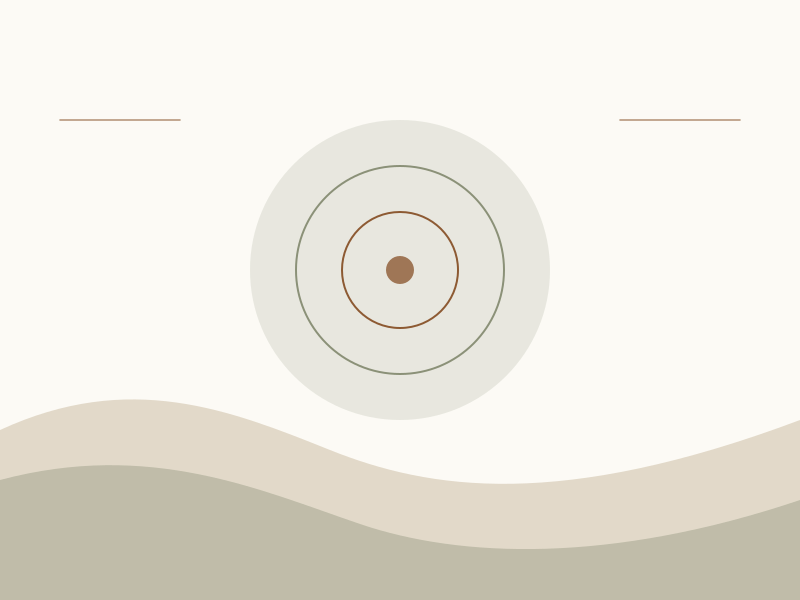
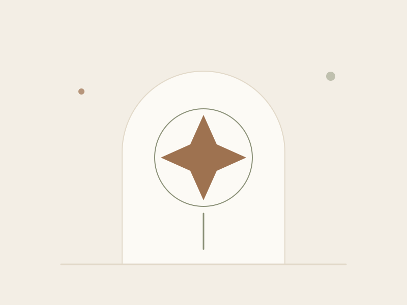
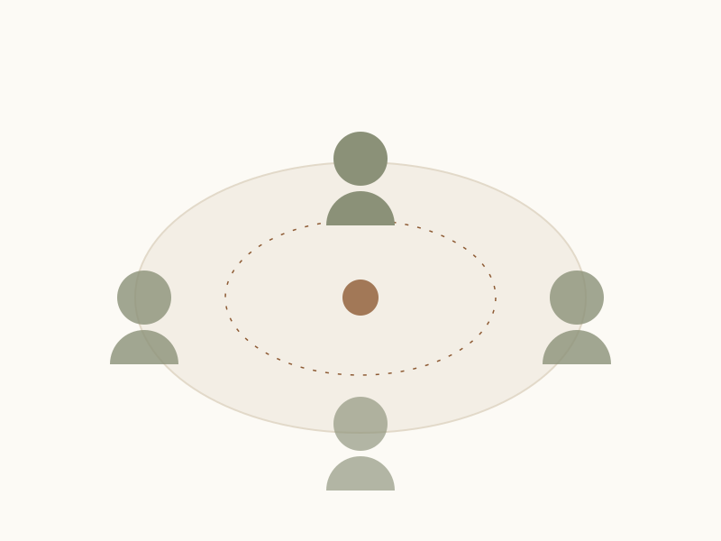

Ways to work together
Three doors into the same room
Same care, three different amounts of company.
Every option below starts with the same twenty-minute call, so you never have to choose in the dark. Prices are placeholders; sliding-scale places are held open each season.

One to one
Somatic Unwinding
60 minutes · $000 placeholder · in person or online
An unhurried hour that begins with your breath rather than your history. We track sensation, let held movement finish itself, and pause often. There is no requirement to talk, and no requirement to stay quiet either.
People usually come for a specific knot — a decision that won't settle, a body that won't rest, a feeling that arrives without a name.
- A short check-in before we begin, so nothing starts by surprise
- Guided breath and gentle, entirely optional movement
- Ten minutes of settling time built into the hour
- One small practice to take home, written down for you

Six-session arc
Inner Compass Sessions
6 × 75 minutes · $000 placeholder · fortnightly
For the patterns that keep coming back. Over six sessions we follow one thread properly — the reflex to shrink, the old loyalty you never agreed to, the apology that arrives before you have done anything.
Fortnightly on purpose: the fortnight between is where most of the work quietly happens, and you are not left alone in it.
- An opening session to map what we are actually following
- Four working sessions, paced entirely by you
- Between-session notes, and a reply within two working days
- A closing session that names what changed, out loud

Small group
Seasons Circle
8 weeks · six people · $000 placeholder
A closed group of six that meets weekly for a season. Shared practice, a lot of shared quiet, and the particular relief of discovering you are not the only one who feels this way on Sunday nights.
No one is ever required to speak. Listening is a full and legitimate way to take part, and several people spend the first fortnight doing exactly that.
- Eight weekly evenings of ninety minutes each
- A group agreement written by the group, in week one
- One private one-to-one hour, included, at any point
- Two sliding-scale places held in every cohort
Still deciding
Not sure which door to use?
Most people aren't. Describe the week you have just had and I'll suggest a starting point — including, when it fits better, somewhere that isn't here.